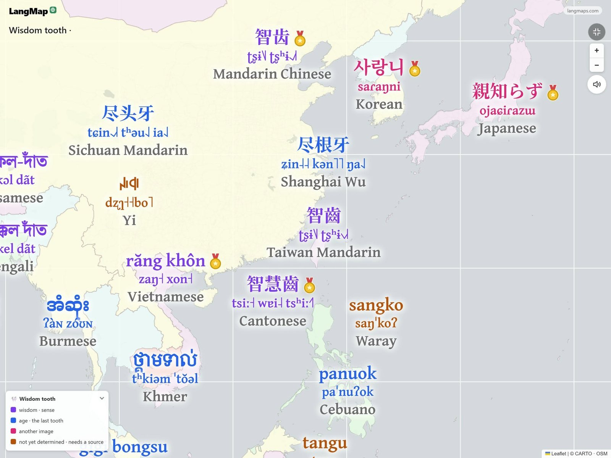

Wisdom, Love, and Missing Parents: What East Asia Calls the Wisdom Tooth
- In China and Vietnam, the last molar is a symbol of wisdom.
- In Korea, it is the "tooth of love," arriving around the time of first romance.
- But in Japan, it is the "tooth that doesn't know its parents." And in ancient China, one doctor was beaten for telling the truth about it.

Contents
Japan: The tooth that doesn't know its parents
In Japanese, a wisdom tooth is called:
親知らず
Oyashirazu
Literally, "not knowing one's parents."
A surprisingly sad name for an ordinary tooth.
The older expression was 親不知歯, and the name was already recorded by 1595.
Why parents?
Wisdom teeth usually emerge in late adolescence or early adulthood.
In earlier times, by that age, a person might already have left home or lost their parents.
The tooth arrives when the parents who raised you may no longer be there to see it.
While much of the world celebrates the arrival of wisdom, Japanese remembers the passage of time and the separation of parent and child.
But across the sea, Korea tells a completely different story.
Korea: The tooth of first love
In Korean, the same tooth is called:
사랑니
Sarangni
"Love tooth."
Why love?
Because wisdom teeth often emerge around the age when people experience their first romantic feelings.
And just like first love, they can be painfully unforgettable.
But the beautiful explanation may not be the whole story.
One etymological theory connects sarangni to older words involving 살 (sal, flesh) and 안 (an, inside), referring to a tooth emerging from within the gums.
A dialectal form, 살강니 (salgangni), has been cited in support of this explanation.
Its precise origin remains debated.
Still, to modern Korean speakers, 사랑니 unmistakably evokes love.
Japan remembers parents.
Korea remembers first love.
And China?
China chose wisdom.
But an ancient Chinese historical record tells a much darker story about that name.
China: The emperor and the punished doctor
In Mandarin Chinese, a wisdom tooth is:
智齿 / 智齒
Zhìchǐ
"Wisdom tooth."
In Cantonese, a common expression is:
智慧齒
zi3 wai3 ci2
Literally, "wisdom tooth."
Why wisdom?
Because these teeth usually appear when a person is approaching adulthood, an age traditionally associated with growing maturity and understanding.
But there is an extraordinary story in the 北齊書 (Book of Northern Qi), a Chinese historical work.
In the sixth century, Emperor Wucheng of Northern Qi developed a new molar.
He summoned his physicians and demanded an explanation.
One doctor, 鄧宣文 (Deng Xuanwen), answered truthfully.
The emperor became furious.
And had him beaten.
Then another physician, 徐之才 (Xu Zhicai), was asked the same question.
This time, the doctor knew better.
Instead of offering an ordinary medical explanation, he congratulated the emperor.
此是智牙，生智牙者聰明長壽。
"This is a wisdom tooth. Those who grow wisdom teeth are intelligent and long-lived."
The emperor was delighted.
And rewarded him.
Same tooth.
Same question.
One doctor was beaten.
The other was rewarded.
All because of how they explained an ordinary molar.
The story does not prove that Xu Zhicai invented the term wisdom tooth. But it shows how the idea was already understood and used in sixth-century China.
And not all Chinese-speaking regions describe this tooth through wisdom.
Some simply describe where it grows.
成都 (Chengdu): 尽头牙, the tooth at the very end.
南京 (Nanjing): 尽根牙, the rearmost tooth.
香港 (Hong Kong): 智慧齒, the tooth of wisdom.
Even within Chinese, the same tooth can be named for its position or for the wisdom supposedly associated with its arrival.
Vietnam: The clever tooth
Vietnamese follows the wisdom tradition.
răng khôn
Răng = tooth
Khôn = wise, sensible, clever
Literally, the "wise tooth."
Like Chinese 智齒, the name associates this late-arriving molar with maturity.
Interestingly, Vietnamese does not ordinarily use the Sino-Vietnamese reading of 智齒 as its everyday name.
Instead, it expresses the concept through familiar Vietnamese words.
Different vocabulary.
The same idea.
But there is a delicious irony.
Wisdom teeth often grow at awkward angles, cause pain, or need to be removed.
The tooth that supposedly announces wisdom can be one of the least cooperative teeth in the mouth.
One tooth, four stories
Across East Asia, the same tooth carries remarkably different meanings.
Japanese: 親知らず, the tooth that doesn't know its parents.
Korean: 사랑니, the tooth of love.
Mandarin: 智齒, the tooth of wisdom.
Cantonese: 智慧齒, the tooth of wisdom.
Vietnamese: răng khôn, the clever tooth.
The biology is the same.
But the names reveal different ways of imagining adulthood.
Japan sees separation from parents.
Korea sees the arrival of love.
China and Vietnam see growing wisdom.
And an ancient Chinese emperor reminds us that sometimes, wisdom is knowing exactly what someone wants to hear.
So what does your language call this troublesome tooth?
One tooth. Four different stories about growing up.